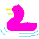

 Welcome! Our goal at Ducks of the World is to be your go-to for all duck related news and so much more. We post articles with duck oriented insights, views into the latest ducks featured in modern art, as well as educational documents for the scientifically curious. We do not discriminate by age; you will find no patronizing kids section here. The fun, beauty, and wonder of ducks is available to everyone. If you've got a brain (or a heart!), you may find something to fill its duck-shaped hole in it.
You've gotta admit it, you're surprised Ducks of the World is growing so rapidly. Check out the new art showcase, and its first submission, Perfect Duck, drawn by yours truly. Get yourself EXTREMELY excited.
A new section has been created. Ducks in the Media will be highlighting even the most subtle references to the duck in popular culture. It kicks off with a funny moment on the hit sitcom Cheers!. You can find it in the Ducks in the Media section above or link to it directly from here.
I spent a long time learning how to make a website and now you reap the rewards. Ducks of the World is born. It is not so impressive now, but please keep in mind that as time goes on we will be filling this space with a plethora of duck factsheets and curiosities.
We intend for the site to be driven by the passion of the community. If you are interested in contacting the webmaster so you can submit your original duck themed media, please do so and we will consider hosting it here, as well as a link back to your own personal page!